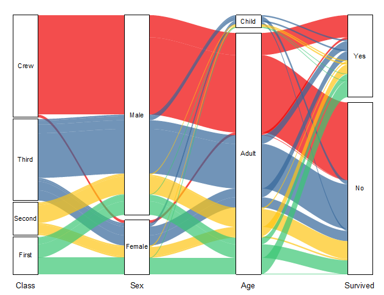

アルビアルダイアグラム
Alluvial-Diagram
- 
必要なデータ
少なくとも2つのY列、あるいは、その部分領域を選択する必要があります。プロット属性は問いません。選択された列はY列として扱われます。
グラフ作成
- データを選択します。
- メニューの作図 > カテゴリカル：アルビアル を選択します。
サンキーダイアグラムの編集についての詳細情報は、次のトピックを参照してください。
テンプレート
Alluvial.otpu (EXEフォルダにインストールされています。)
Notes
この種のグラフの詳細をわかりやすく説明するために、小さな黒い長方形を「ノード」、色付きの領域（リンクノード）を「リンク」、そして垂直方向のノードグループを「ステップ」と呼びます。
アルビアルダイアグラムは、ノード間の加重フローを表します。2通りのデータ形式からアルビアルダイアグラムの作図が可能です。
- ワークシートの生データ：個々の観測値は行に、変数または特性は列に保存します。データセットの各行が一連のリンクフローになり、各列がステップを定義し、同じ値を持つセルがノードを定義します。
- 要約データ：複数のラベル列と値列を持つワークシート（各ラベル列はグラフ上のノードの個別の列として表示され、最後の列はリンク値の列である必要があります）
Originアルビアルダイアグラムでは、ノードの高さを直接定義する必要はありません。（1）生データの入力の場合、ノードの高さとフローの幅は、同じ2つのノードを含むデータセット内の行数にリンクされます。同じ2つのノードから送受信されるフローはグループ化されています。（2）要約データの入力の場合、最後の列の値は、フロー全体内のリンク幅とノード高さに重みを付けます。同じ2つのノードから送受信されるフローはグループ化されています。
詳細な編集
- すべてのプロットについて、ノード間の間隔およびノードとフローリンク間の間隔は調整することができます。
- 任意のノードをクリックすると、リンクと関連するノードを含むこのノードで送受信さている全フローがハイライト表示されます。
- 任意のリンクセットをクリックすると、リンクと関連するノードを含む開始から終了までの全フローがハイライト表示されます。
- リンクの色をノードに従った色に設定したり、カラーチューザーを使用して設定することができます。
- リンクの線は4つの方法で分類、統合可能です。
- ノードおよびリンクにラベルを付けることもできます。